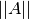
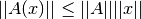

power_method_opnorm¶
-
odl.operator.oputils.power_method_opnorm(op, xstart=None, maxiter=100, rtol=1e-05, atol=1e-08, callback=None)[source]¶ Estimate the operator norm with the power method.
Parameters: - op :
Operator Operator whose norm is to be estimated. If its
Operator.rangerange does not coincide with itsOperator.domain, anOperator.adjointmust be defined (which implies that the operator must be linear).- xstart :
op.domainelement-like, optional Starting point of the iteration. By default an
Operator.domainelement containing noise is used.- maxiter : positive int, optional
Number of iterations to perform. If the domain and range of
opdo not match, it needs to be an even number. IfNoneis given, iterate until convergence.- rtol : float, optional
Relative tolerance parameter (see Notes).
- atol : float, optional
Absolute tolerance parameter (see Notes).
- callback : callable, optional
Function called with the current iterate in each iteration.
Returns: - est_opnorm : float
The estimated operator norm of
op.
Notes
The operator norm  is defined by as the smallest number such that

for all
 in the domain of
in the domain of  .
.The operator is evaluated until
maxiteroperator calls or until the relative error is small enough. The error measure is given byabs(a - b) <= (atol + rtol * abs(b)),where
aandbare consecutive iterates.Examples
Verify that the identity operator has norm close to 1:
>>> space = odl.uniform_discr(0, 1, 5) >>> id = odl.IdentityOperator(space) >>> estimation = power_method_opnorm(id) >>> round(estimation, ndigits=3) 1.0
- op :